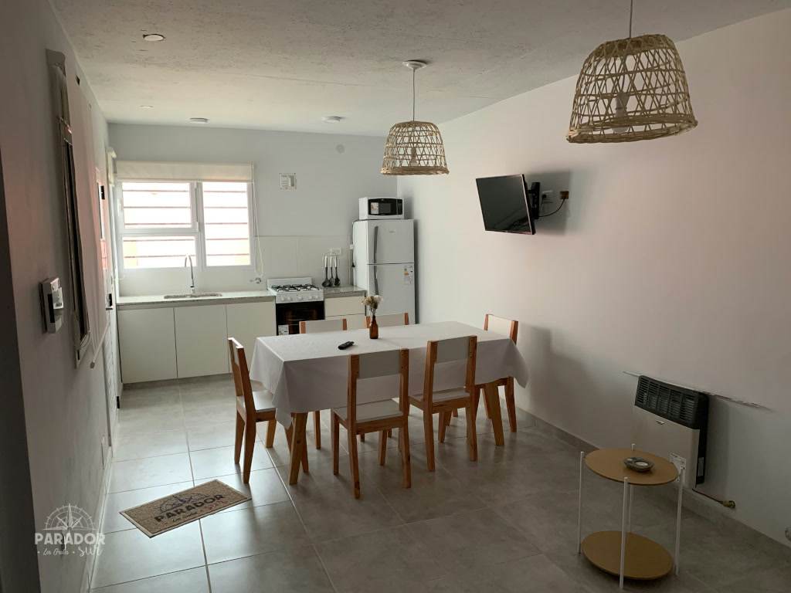
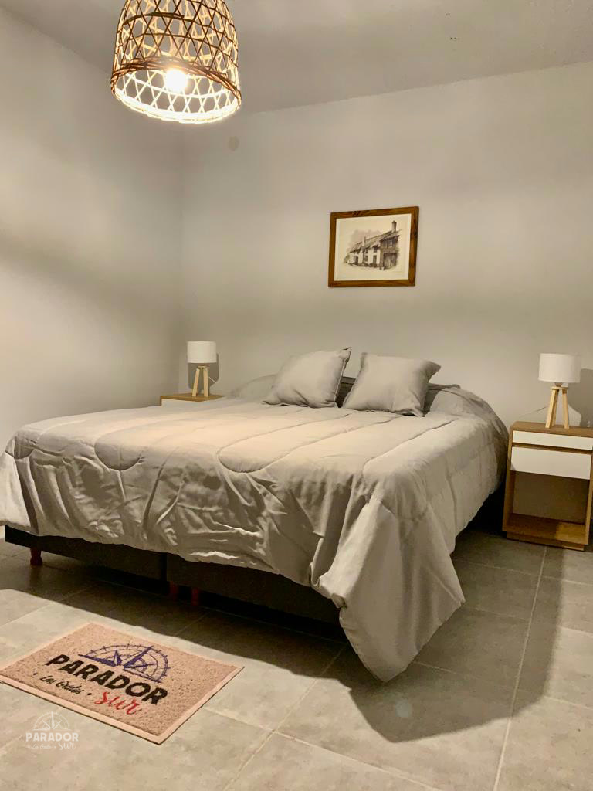

PARADOR SUR · LAS GRUTAS · DOS UNIDADES AL FONDODos
Dos
ambientes
Más lugar para estar juntos, con un dormitorio separado para descansar.
Consultar disponibilidadDeslizá para conocer el lugar
40 m²por unidad
2 a 4personas
1dormitorio separado
Individualparrilla
TU LUGAR EN LAS GRUTASHacé espacio
Hacé espacio
para descansar.
Departamentos con dormitorio separado, cocina y lugar para compartir tus días en Las Grutas.
Ver todas las fotos
Parador Sur · Las GrutasRECORRÉ EL LUGAR
Velo por vos mismo.
Explorá las 17 fotos. Tocá una imagen para verla completa y recorré la galería con las flechas.
¿Cuándo te gustaría venir?
Contale a Silvia tus fechas y te confirma disponibilidad.
Hablar con Silvia por WhatsApp